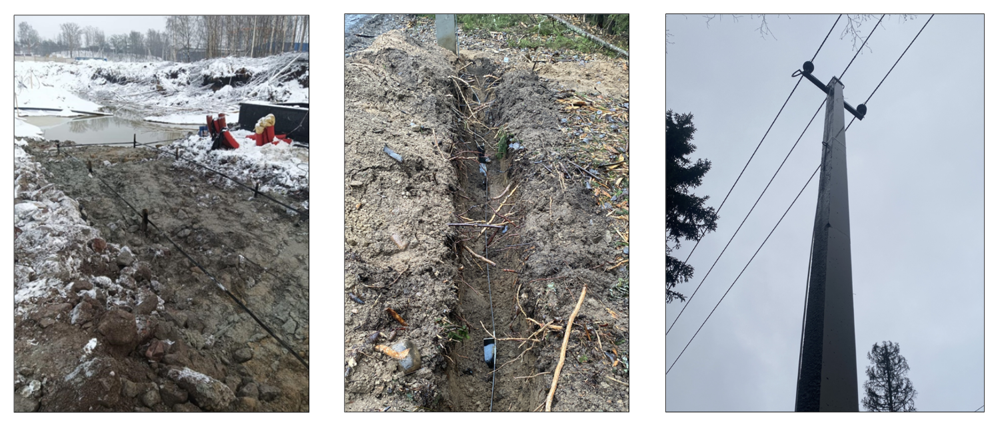

Так выглядит устройство контура заземления небольшой подстанции. Когда подстанцию установят, контур стальной полосой приварят в выпускам контура самой подстанции
А так выглядит устройство контура заземления высоковольтной опоры
И надземная часть (круглый проводник), который впоследствии соединяется с подземной частью